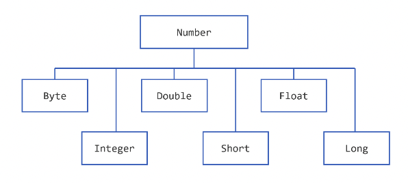

【官方】Java官方笔记5数字和字符串¶

Numbers¶
Number的子类：

另外还有BigDecimal和BigInteger，用于高精度计算，AtomicInteger和AtomicLong用于多线程应用。
我们有时候需要用包装类而非基本数据类型，理由如下：
方法入参类型为Object，只能传入对象
使用包装类提供的常量，比如MIN_VALUE和MAX_VALUE
使用包装类的方法来做类型转换
format
import java.util.Calendar;
import java.util.Locale;
public class TestFormat {
public static void main(String[] args) {
long n = 461012;
System.out.format("%d%n", n); // --> "461012"
System.out.format("%08d%n", n); // --> "00461012"
System.out.format("%+8d%n", n); // --> " +461012"
System.out.format("%,8d%n", n); // --> " 461,012"
System.out.format("%+,8d%n%n", n); // --> "+461,012"
double pi = Math.PI;
System.out.format("%f%n", pi); // --> "3.141593"
System.out.format("%.3f%n", pi); // --> "3.142"
System.out.format("%10.3f%n", pi); // --> " 3.142"
System.out.format("%-10.3f%n", pi); // --> "3.142"
System.out.format(Locale.FRANCE,
"%-10.4f%n%n", pi); // --> "3,1416"
Calendar c = Calendar.getInstance();
System.out.format("%tB %te, %tY%n", c, c, c); // --> "May 29, 2006"
System.out.format("%tl:%tM %tp%n", c, c, c); // --> "2:34 am"
System.out.format("%tD%n", c); // --> "05/29/06"
}
}
DecimalFormat
import java.text.*;
public class DecimalFormatDemo {
static public void customFormat(String pattern, double value ) {
DecimalFormat myFormatter = new DecimalFormat(pattern);
String output = myFormatter.format(value);
System.out.println(value + " " + pattern + " " + output);
}
static public void main(String[] args) {
customFormat("###,###.###", 123456.789);
customFormat("###.##", 123456.789);
customFormat("000000.000", 123.78);
customFormat("$###,###.###", 12345.67);
}
}
Math
public class BasicMathDemo {
public static void main(String[] args) {
double a = -191.635;
double b = 43.74;
int c = 16, d = 45;
System.out.printf("The absolute value " + "of %.3f is %.3f%n",
a, Math.abs(a));
System.out.printf("The ceiling of " + "%.2f is %.0f%n",
b, Math.ceil(b));
System.out.printf("The floor of " + "%.2f is %.0f%n",
b, Math.floor(b));
System.out.printf("The rint of %.2f " + "is %.0f%n",
b, Math.rint(b));
System.out.printf("The max of %d and " + "%d is %d%n",
c, d, Math.max(c, d));
System.out.printf("The min of of %d " + "and %d is %d%n",
c, d, Math.min(c, d));
}
}
Charaters¶
基本类型char
char ch = 'a';
// Unicode for uppercase Greek omega character
char uniChar = '\u03A9';
// an array of chars
char[] charArray = { 'a', 'b', 'c', 'd', 'e' };
Character
Character ch = new Character('a');
Strings¶
定义：
String greeting = "Hello world!";
char[] helloArray = { 'h', 'e', 'l', 'l', 'o', '.' };
String helloString = new String(helloArray);
System.out.println(helloString);
回文字符串实现：
public class StringDemo {
public static void main(String[] args) {
String palindrome = "Dot saw I was Tod";
int len = palindrome.length();
char[] tempCharArray = new char[len];
char[] charArray = new char[len];
// put original string in an
// array of chars
for (int i = 0; i < len; i++) {
tempCharArray[i] =
palindrome.charAt(i);
}
// reverse array of chars
for (int j = 0; j < len; j++) {
charArray[j] =
tempCharArray[len - 1 - j];
}
String reversePalindrome =
new String(charArray);
System.out.println(reversePalindrome);
}
}
String转换为基本数据类型，parseXXX()比valueOf更好用：
float a = (Float.valueOf(args[0])).floatValue();
float b = (Float.valueOf(args[1])).floatValue();
float a = Float.parseFloat(args[0]);
float b = Float.parseFloat(args[1]);
基本数据类型转换为String：
int i;
// Concatenate "i" with an empty string; conversion is handled for you.
String s1 = "" + i;
// The valueOf class method.
String s2 = String.valueOf(i);
int i;
double d;
String s3 = Integer.toString(i);
String s4 = Double.toString(d);
根据字符查找对应索引：
String anotherPalindrome = "Niagara. O roar again!";
char aChar = anotherPalindrome.charAt(9);
子串：
String anotherPalindrome = "Niagara. O roar again!";
String roar = anotherPalindrome.substring(11, 15);
String Builders¶
String不可变，StringBuilder可变。StringBuilder除了length()，还有个capacity()，返回分配的字符数量，大于等于length，并且会自动扩充。
// creates empty builder, capacity 16
StringBuilder sb = new StringBuilder();
// adds 9 character string at beginning
sb.append("Greetings");
StringBuffer用的少，只在需要保证线程安全时使用。
自动装箱和拆箱¶
装箱，基本数据类型→包装类：
List<Integer> ints = new ArrayList<>();
for (int i = 1; i < 50; i += 2)
ints.add(i);
拆箱，包装类→基本数据类型：
public static int sumEven(List<Integer> ints) {
int sum = 0;
for (Integer i: ints) {
if (i % 2 == 0) {
sum+=i;
}
}
return sum;
}
参考资料：
Numbers and Strings https://dev.java/learn/numbers-strings/